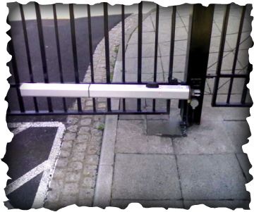

Rolling Gate - Installation, Repair and Maintenance
Rolling Gate - Installation, Repair and Maintenance
New Jersey Gate Mounted Swing Gate Opener
Generally
a more economical gate automation system than the underground system. Electro-Hydraulic or mechanical pistons are mounted on the back of each gate Ieaf.
This form of automation is particularly popular on wooden five bar farm type gates, although it is equally suited to most timber & wrought iron gate designs. It should be noted that on certain installations, it may be necessary to remove a small section of the gate post to allow the motor to be mounted correctly. Various models are available to suit gate leaves up to four metres wide

Introduced
as an economical and adaptable solution to the automation of gates. Designed to overcome most installation problems which previously prevented automation of gates, particularly those with large gate posts. Electro-mechanical motors fitted with an articulated arm allow flexible positioning of the motor unit away from the gate hinges. Opens gates up to 125° and subject to a maximum of 200kg per gate leaf at 2500mm wide and 250kg per gate leaf at 2000mm wide.
New Jersey Gates repair , Rolling Gate repair storefront gate fin NJ gates repair install gate , gate operator , gate service , lubrication gates. roll up gate roll down gates new jersey gate 24/7 , 24 hour gate services